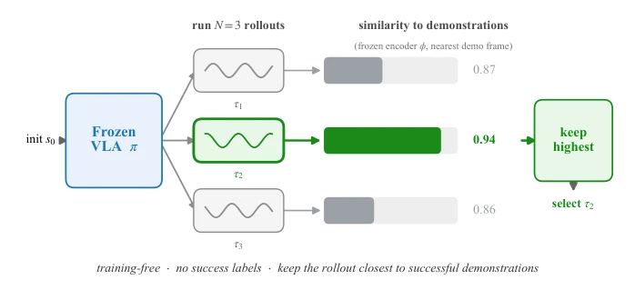
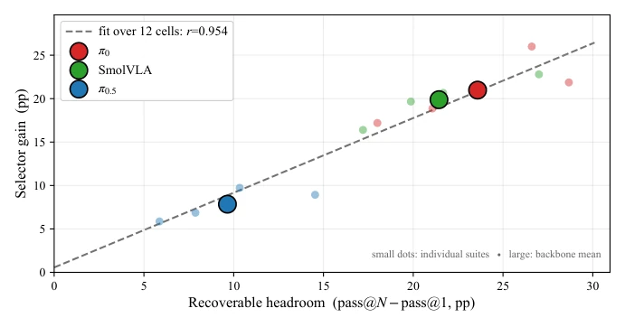

This paper is like a calm "physical examination report", providing a diagnosis for those VLA models that blindly increase compute at test time. The authors did not pursue fancy new architectures, but instead hit the pain point directly: should we rely on "trying a few more times" (sampling selection) or "finding external help" (retrieval augmentation)? The highlight lies in quantifying "recoverable potential" and "retrieval complementarity", making test-time augmentation no longer metaphysics, but a data-supported decision. However, the points of critique are also obvious: this method relies on retries or parallel execution, which may not be well-suited for single-shot irreversible deployment scenarios (such as real robot manipulation) and incurs high costs. Moreover, the DFE metric strongly depends on action space consistency, so caution is needed when comparing across models; it cannot be directly generalized. Overall, it suits teams with redundant compute at hand who want to fully exploit the potential of frozen policies, but do not expect it to solve all generalization problems, especially in cases with weak ranking signals.
Frozen VLA models [1, 5] perform unstably on new tasks, and retraining costs are too high, making Test-Time Augmentation (TTA) a popular solution. Existing methods either retrieve external demonstrations [3, 8, 14, 17] or sample multiple candidates [2, 4, 7, 20], but lack guiding principles. The same retrieval mechanism works for π0 but is ineffective for SmolVLA; blind application wastes resources. The core question is: does strategy failure occur because it fundamentally cannot do it (needs external priors), or because it can do it but selects incorrectly (needs sampling selection)? Existing work does not distinguish these two failure modes, leading to a mismatch between intervention means and needs. This paper aims to distinguish opportunities for "recovering existing capabilities" versus "introducing external priors" through measurable metrics, avoiding wasting test-time computation in the wrong direction.
The overall process is divided into two parts: diagnosis and enhancement. First, two metrics are defined: 1. Recoverable Headroom, i.e., the difference between pass@N and pass@1, measuring whether the policy hides successful trajectories internally; 2. Retrieval Complementarity, measuring the gap between the policy action distribution and demonstration priors via Demonstration Fitting Error (DFE). The enhancement part includes two modules: 1. Retry Selector: no training, uses frozen encoder [15] to calculate similarity between trajectories and demonstration manifold, selecting the best from N samples; 2. Retrieval Augmentation: event-pattern-based prospective retrieval, using retrieved action blocks to warm-start flow matching sampling. The selector does not depend on success labels, only on visual embedding similarity; retrieval matches current events with the demonstration library via weighted distance. Both can be combined, addressing "wrong choice" and "cannot do" problems respectively. In specific implementation, the selector runs at the episode level, assuming retries are possible; retrieval uses event detection (e.g., gripper open/close) to segment sub-skills, matches the current event and returns the action block for the next event.

Fig. 2: Episode-level retry selection. From the same initial state s0, the frozen policy π is run N times with different seeds, producing candidate rollouts τ1, . . . , τN. Each rollout is scored by its average proximity to successful demonstrations in a frozen embedding space ϕ (Eq. 4), and the highest-scoring rollout is selected. The selector is training-free, uses no success labels, and assumes repeated or parallel execution.
Tested on the LIBERO [13] benchmark with π0, SmolVLA, π0.5. Results show the selector is effective on all backbones, with improvements up to 21.0%, and highly correlated with recoverable potential (r=0.954). Retrieval is only effective for π0 with the largest DFE, while SmolVLA shows weak improvement. Cross-domain experiments (SimplerEnv-Bridge) prove the selector is transferable, but retrieval fails. OpenVLA [5] experiments reveal a key limitation: even if large recoverable potential exists, if the ranking signal is weak, the selector cannot utilize it effectively. In occlusion scenarios, selector gains increase with potential. The conclusion is: potential and ranking ability need to be evaluated separately, combining both yields the maximum benefit. Additionally, random selection cannot reproduce the gain, proving the ranking signal is crucial.

Fig. 1: The headroom relation. Selector gain against recoverable headroom (pass@N−pass@1). Small dots are the 12 backbone×suite cells, and large markers are the three backbone means. The dashed fit gives r=0.954, bootstrap 95% CI [0.89, 0.99], and 0.91±0.04 on disjoint episode splits. The training-free score recovers about 90% of the available headroom across backbones.